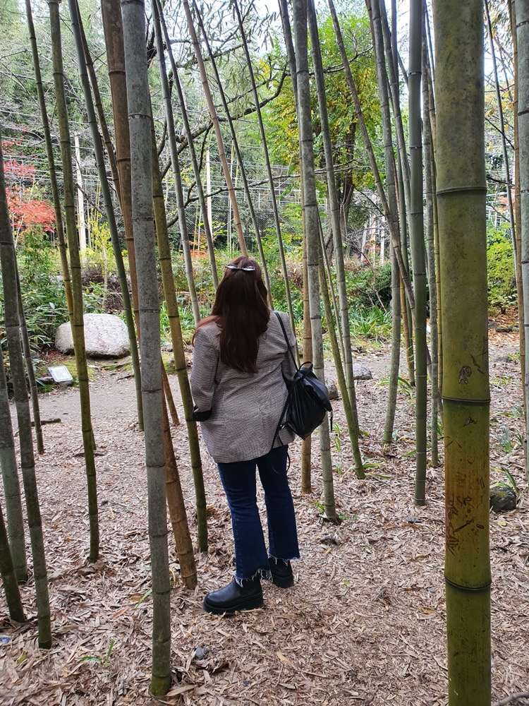
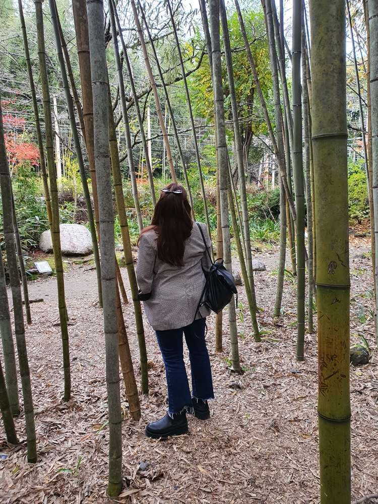

SPEND 10 DAYS IN JAPAN
How to spend 10 days in Japan

Wow, you have made it! Congratulations! After a long, long flight you have arrived in Japan. I am sure you can't wait to start exploring. For me, what I like to do most when I arrive in Tokyo is to hit the streets of Shinjuku. It has the best nightlife in Tokyo, countless restaurants to choose from, arcades, shops and much more. Shinjuku is also known for it's Karaoke Restaurants. After a few drinks you may feel bold enough to give it a try!
7 DAYS TRIP IN ICELAND
The perfect roadtrip plan
So here I am going to share the best tips for an unforgettable trip to Iceland. The first thing to take into account is when are you visiting Iceland, as the kind of trip and things to see will vary. I am going to advise regarding Iceland during the winter season, this is from December to March. During the dark winter months it is the best time to spot the Northern Lights which is one of the wonders of Iceland. It is said that the best time to see them is March as is the warmest month where you could see them.
IRELAND, THE PERFECT ITINERARY
Roadtrip planner for the Emerald isle
Failte, to my road trip planner for a fantactic adventure in Ireland. We will start our holidays in Dublin the capital city. Dublin is a buzzing city, full of life, restaurants servint mouth-watering food, and countless pubs options that will you allow to sit down relax and enjoy a deserved pint of Guinness.
About Me
As a travel blogger sharing my tips and experiences is what I do. Joing my community and let's start discovering the world together...
Popular Post
 
